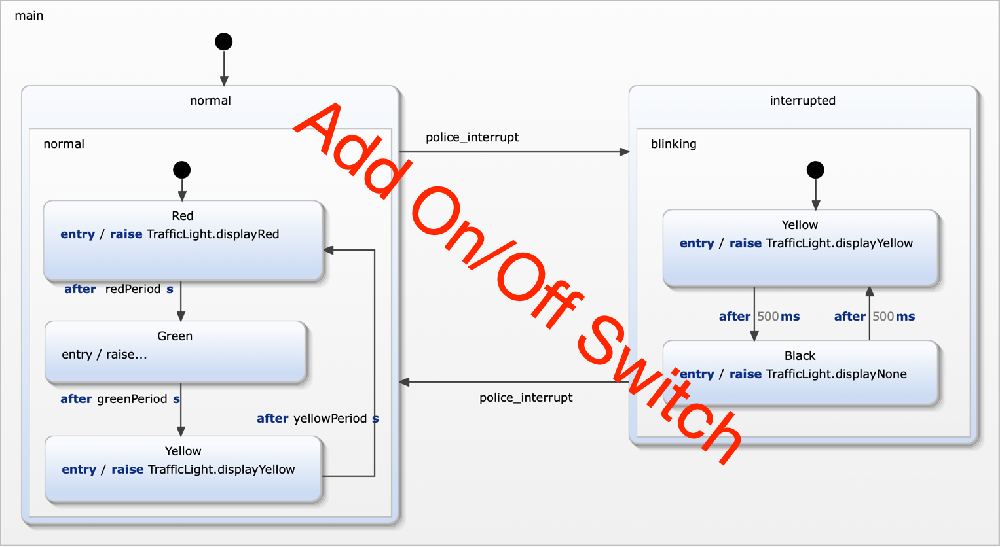

Exercise 7
Switching traffic light on and off
Add another hierarchy level that supports switching on and off the coomplete traffic light.
Go into detail with shallow and deep histories.

Requirements
- R9a: The traffic light can be switched on and off.
- R9b: The traffic light is initially off.
- R9c: If the traffic light is off nocht light is on.
- R9d: After switching off and on again the traffic light must switch on the previously activated light.
Model the feature
Follow the same procedure as in previous exercises.
- Take a look at specification/SwitchOnOffSpecification.sctunit. These test cases are already complete and checks all the requirements defined above.
It will fail on the first run.
- Extend the stetchart. All required declarations are already in place.
- While you are extending the statechart run the test suite TestTrafficLight.sctunit. It contains the new interrupt specification and
all previously defined tests. Running this suit makes sure that no regressions occur.
- Continue from 2. until all tests are green. You should also have no uncovered model elements.